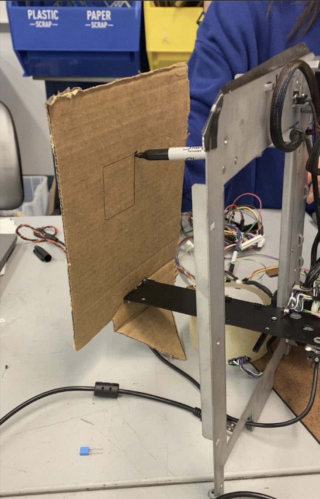
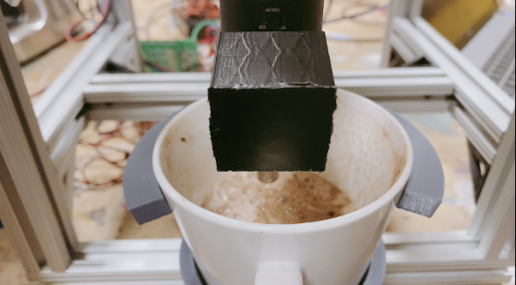

Integration Process
Sprint 1
Our overarching goals were to create a machine that can both steam milk and make latte art at the press of a button. We planned on interacting wirelessly with the Raspberry Pi and creating a GUI using React and flask.
By the end of the first sprint, the mechanical team disassembled a 3-axis printer, so we had a 2-axis gantry we could test stepper motor movements on, as well as stepper motors and limit switches to test with. The mechanical team needed the Y-axis to create a CAD for the latte art gantry they were designing, so the electrical team tested the motors and limit switches on the remaining two axes.
The electrical team was able to move the X-axis motor in a line on the 2-axis gantry. The X-axis motor was controlled with an Arduino library called Stepper. A CNC motor shield was used for testing the motors.
The software side did research on using GRBL, which seems to be a popular option when it comes to controlling stepper motors with a CNC motor shield. However, after finding out that GRBL requires a third-party application, we decided to widen the scope of the software side and create our own G-Code library.
Sprint 2
We decided to exclude making the milk steamer aspect of our machine because of our slower progress in fully controlling the stepper motors and creating the 3-axis gantry. At this point, the tilt mechanism was complete, while the gantry CAD was almost complete. Some parts of the gantry were prototyped out of plywood.
On the electrical side, the solenoid valve was wired up with a MOSFET and diode, then successfully tested. We switched to using the Ramps 1.4 shield with the Arduino mega, and all the motors were calibrated for the 2-axis test gantry. We switched to using a library called StepperDriver for motor control purposes. We also tested the Time-of-Flight sensor, then started doing research on the hard stop.
On the software side,the basic structure for our own G-Code library to move the stepper motors was created. The basic structure was created in the Arduino IDE, then tested using LEDs.
Sprint 3
The 3-axis gantry system was fully assembled, including all the electrical connections. The extrusion structure was also fully assembled, with the nozzle successfully extruding milk. Only small tweaks were needed, such as adding routes for wiring, adding an outer shell, and fixing the tilt mechanism. All parts of the liquid loop are food safe since the materials we used were either nylon, plastic, or stainless steel. After each latte test session, soap and water are run through the loop until all the milk is cleaned out.
On the electrical side, we had complete control over the 3-axis gantry system on the new assembly. All axes were calibrated and the stepper motor driver library was edited to control all five steppers at once. A new power supply was also ordered so that all five steppers can move at the same time. All the limit switches and the emergency stop button were integrated as well. The solenoid valve was soldered, then integrated into code.
On the electrical side, we had complete control over the 3-axis gantry system on the new assembly. All axes were calibrated and the stepper motor driver library was edited to control all five steppers at once. A new power supply was also ordered so that all five steppers can move at the same time. All the limit switches and the emergency stop button were integrated as well. The solenoid valve was soldered, then integrated into the code. On the software side, the G-Code library we created was fully able to control the stepper motors. The origin of the cup was calibrated, and the motor steps were converted to millimeters. The paths for the base, heart, and rosetta were drafted and only needed fine-tuning through testing. We decided to focus our attention on reorganizing the Python code and planning the GUI in Pygame.
Final Demo Day
On the mechanical side, slight adjustments and fixes were made to decrease the flow rate and velocity including experimenting with pinching the tube, decreasing the size of the opening at the top of the funnel, and increasing the orifice size of the milk extruder. In addition, slight adjustments were made to make the milk extruder more stable including adding steel brackets and recruiting the x-axis with steel. The mechanical team also added aesthetic final touches like a green acrylic box that was rastered with our robot’s name “BaristaBot '' as an outer shell and a small green box internally to hide and protect the electrical components. On the electrical side, the wires were reordered and cut to be able to go along the extrusion structure. The solenoid valve was resoldered onto a new board and placed into the green box. On the software side, the GUI code was created using a design from Canva, and the paths were further fine-tuned through testing.